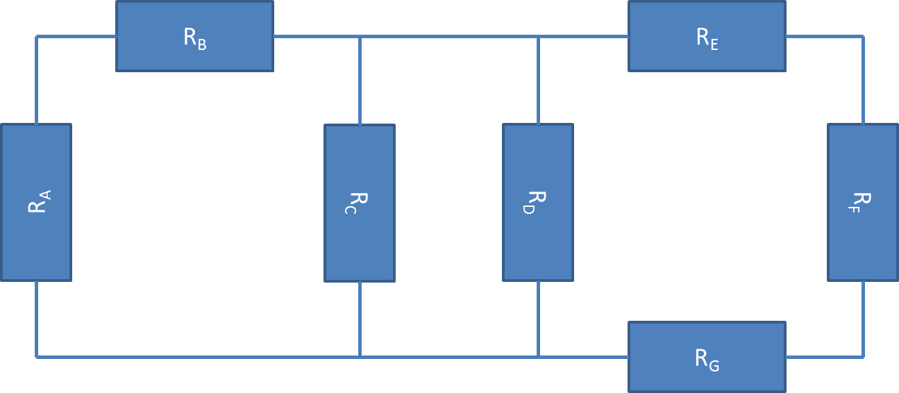

Circuits
Introduction to Circuit Elements and Ohm's Law
Objectives
After this chapter you should be able to:
Circuits and Circuit Elements
A circuit is the interconnection of electrical devices in a circular path. To power the circuit, voltage is generated from a power source and moves through the wires and components. Voltage is the total work per unit charge associated with the motion of charge between two points. The rate at which the electrical charge is flowing through a wire or conductor is called current. Both current and voltage are required to achieve electrical power. |
 |
Some people have trouble conceptualizing electricity because they cannot see it. Try considering the circuit to instead be a system of pipes. Each pipe is essentially a very large wire. The power source, which is essentially a pump, takes in charge with low voltage and outputs charge with high voltage. Similarly, a pump which takes in water of low pressure and pushes out higher pressure water. The flow rate of the water moving through the pipe would be the voltage. Water flows from areas of high pressure to low pressure; likewise, electricity flows from areas of high voltage to low voltage. The speed at which water moves through a pipe is the current. The size of the pipe acts as resistance. If the pipe is very large, the resistance is very low and the water can flow freely; if the pipe is small, the water flow is much more restricted. Small resistors are basically large pipes, and large resistors are small pipes. |
 |
| Resistance, measured in Ohms, of an electrical component is when current opposes, or resists, flowing through that component. The most common electrical component to induce resistance is a Resistor. It is important to remember that resistors always dissipate power. Resistors are color coded to show how much they will oppose current. Most resistors have two or three colored bands to denote the resistance followed by either a silver or gold band to denote the tolerance level. |  |

Resistance and current can be used to determine voltage with Ohm's Law. Ohm’s law is the most important equation for basic circuitry. |
|
That equation can then be substituted into the Power equation from before. |
 |

|  |  |
| First, recognize the series and parallel resistors in this circuit. Start by reducing resistors A and B into an equivalent resistance: |  |
| Next, reduce the parallel resistors C and D: | |
| Third, reduce series resistors E, F and G: | |
| The new configuration would look like this: | |
| Now, solve RCD and REFG which are in parallel: | |
| Finally, solve the equation by adding the equivalent resistances since they are in series: |